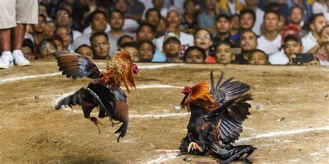
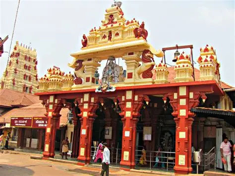
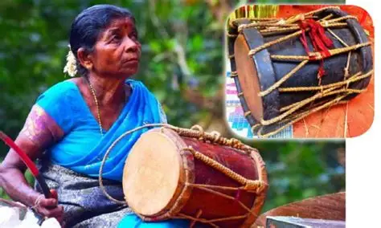

Culture of Tulunadu

Yakshagana
A vibrant traditional theatre form unique to Tulunadu.

Pili Nalike (Tiger Dance)
A vibrant folk dance performed during festivals, symbolizing strength and energy.

Korikatta
A traditional rural sport of Tulunadu, deeply rooted in village culture.

Temples of Tulunadu
Historic temples like Udupi Krishna, Kukke, Kateel and Polali are cultural pillars.

Tulu Language & Script
One of the oldest Dravidian languages with its own classical script.

Tulu Paddana
Epic oral folk songs passed through generations, narrating legends of Tulunadu.